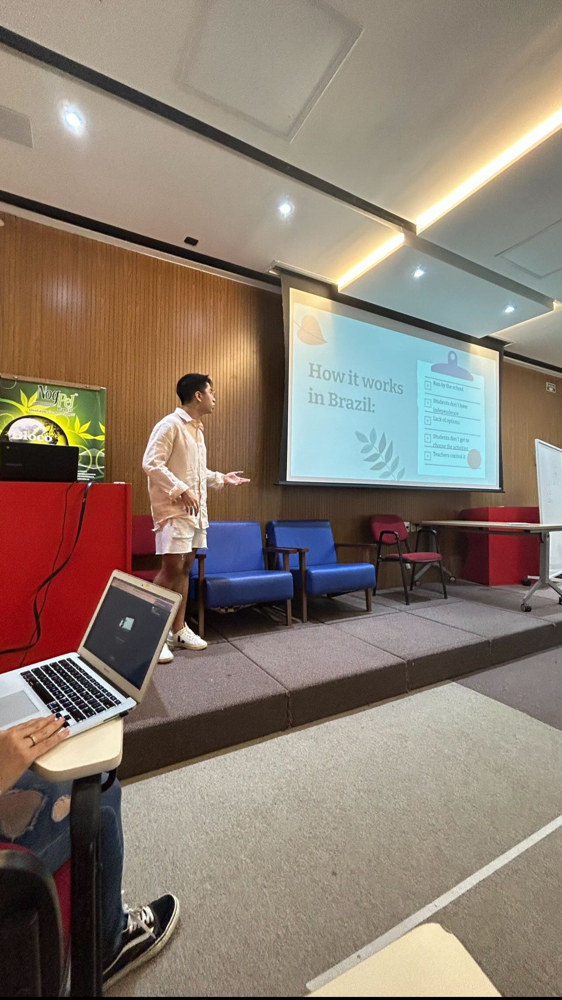
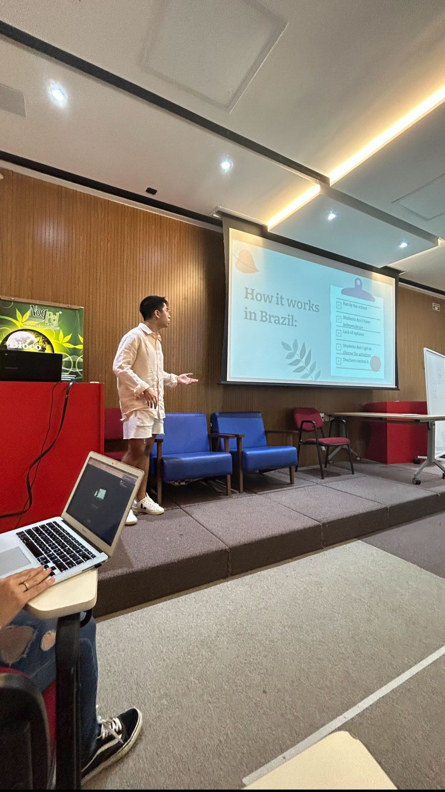

UBC Botanical Garden


The Climate Society recently had the pleasure of participating in the 32nd Annual Apple Festival at the UBC Botanical Garden. This event was a celebration of autumn's bounty, focusing on the diverse and delicious world of apples. Our involvement in this festival was an enriching experience that aligned perfectly with our mission of promoting environmental awareness and sustainable living.
At the festival, we engaged with a wide array of attendees, ranging from apple enthusiasts to families enjoying a day out. Our team shared insights about the importance of biodiversity, sustainable agriculture, and the role of local ecosystems in supporting such events. The festival was an excellent platform for us to connect with the community and spread our message about environmental stewardship.
The event featured a stunning variety of apples, apple-based products, and informative sessions about apple cultivation and its environmental impact. Being surrounded by the natural beauty of the UBC Botanical Garden, we felt a deep connection to nature and the importance of preserving such green spaces.
Our participation in the Apple Festival was not only a celebration of this beloved fruit but also an opportunity to remind ourselves of the simple yet profound connections we share with the natural world. We left the event inspired and motivated to continue our efforts in advocating for a sustainable and environmentally conscious lifestyle.
We extend our gratitude to the UBC Botanical Garden for hosting this delightful event and allowing us to be a part of it.
Climate Talk in Brazil
 

In a heartwarming event held at a local Brazilian school, I had the privilege of imparting valuable lessons on leadership and initiative to a group of enthusiastic children. The focus of the day was on empowering these young minds to create and lead their own school clubs. The event began with an interactive session, where I shared inspiring stories of individuals who took initiative and made a positive impact in their communities. Guiding the children through the process of identifying their passions and interests, I encouraged them to brainstorm ideas for potential school clubs. From environmental awareness to creative arts, the kids embraced a wide range of topics that reflected their diverse interests. Through engaging activities and group discussions, they learned the fundamentals of club organization, including goal-setting, teamwork, and effective communication. As the event unfolded, the children's excitement grew palpable. They not only gained practical insights into forming clubs but also developed a sense of responsibility and ownership over their initiatives. The event concluded with the children presenting their club concepts, showcasing not only their creativity but also their newfound confidence and leadership skills. The impact of this empowering experience went beyond the classroom, fostering a spirit of initiative and community engagement among the young participants.
- Otavio Nunes, Co-Founder